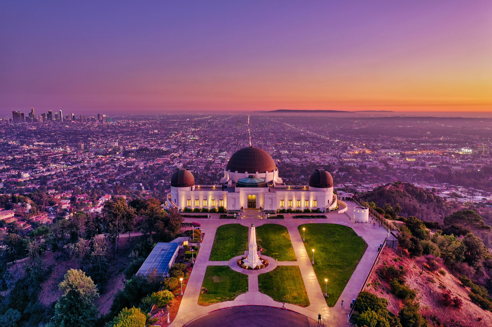

Griffith Observatory

Mountains

Universal Studios
LA - The City of Angels
Griffith Observatory
Mountains
Universal Studios
Los Angeles is the City of Dreams and is the heart of southern California. It is a vast and varied geographic entity. The city is famous for being the home of the rich and famous, Hollywood, the main home of major entertainment companies, ethnically diverse, and the second-largest city in America.
The residents of Los Angeles are called Angelenos. Their lifestyle relies on the automobile, idealizes the single-family dwelling, and favours informality. With notable exceptions, the skyline is primarily horizontal rather than vertical. Los Angeles is a place of extraordinary ethnic and racial diversity, owing largely to immigration. It is a must visit place and a beautiful vacation desination.


Hollywood
Beaches